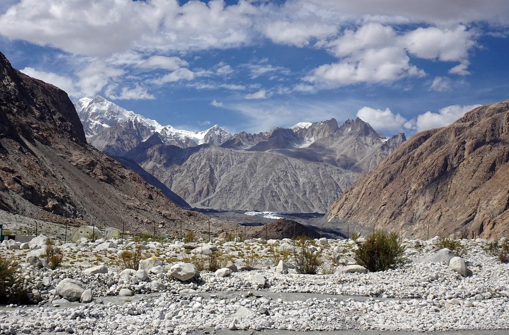

Welcome to Go Adventures, where the spirit of exploration meets the thrill of the wild! We are your ultimate gateway to extraordinary adventures, inspiring people to step out of their comfort zones and embrace the wonders of nature. At Go Adventures, we believe life is meant to be lived to the fullest, one thrilling experience at a time. Whether you're hiking through dense forests, soaring above majestic peaks, riding waves along pristine coastlines, or gliding through the skies, we create experiences that spark joy and leave lasting memories.
Hiking in India offers a diverse and enriching experience, with countless trekking routes across the country. From the towering Himalayan peaks to the serene Western Ghats and the beautiful coastal hills, India is a hiker's paradise. Here are some popular hiking destinations and trails in India
Experience the thrill of biking as you explore winding roads, rugged trails, and breathtaking landscapes on two wheels. Biking isn’t just a sport—it’s a lifestyle that combines adventure, fitness, and a deep connection to nature. Whether you’re cruising along serene coastal roads, navigating challenging mountain trails, or embarking on long-distance rides through picturesque countryside, biking offers a unique way to experience the world. Feel the wind in your face and the exhilaration of conquering steep climbs, rewarded by panoramic views and the joy of descent. From the high-altitude passes of Ladakh to the lush plantations of Coorg, and from bustling city biking tours to serene forest paths, every journey is a story waiting to be told. Whether you're a seasoned cyclist or a casual rider, biking promises adventure, discovery, and unforgettable memories. So gear up, pedal on, and let the journey begin! with GO-Adventures
Take flight and experience the ultimate freedom with paragliding—a thrilling adventure that lets you soar like a bird and witness the world from above. Imagine gliding through the sky, feeling the rush of wind against your face as breathtaking landscapes unfold beneath you. Whether you're flying over the lush green valleys of Bir Billing, the serene beaches of Goa, or the majestic mountains of Manali, each flight is an unforgettable journey. Paragliding is not just about adrenaline—it's about embracing the tranquility of the open skies and the surreal beauty of nature. With professional instructors and state-of-the-art equipment, even first-time flyers can enjoy the magic of paragliding safely. So, spread your wings, take a leap, and let the sky be your playground. Your next great adventure begins where the ground ends! with Go-Adventures
Ride the waves and dive into the exhilarating world of surfing! Whether you're a seasoned pro or a first-timer, surfing offers the perfect blend of adventure, skill, and connection with the ocean. Feel the rush as you catch the perfect wave, balancing on the crest of nature's power. India's stunning coastlines, from the pristine beaches of Goa to the surfer's paradise of Kovalam, and the tranquil waters of Varkala to the wild waves of the Andaman Islands, provide the ideal backdrop for this thrilling water sport. Surfing isn’t just about conquering waves—it’s about embracing the rhythm of the ocean, the serenity of sunrise surf sessions, and the camaraderie of the surfing community. With expert instructors and surf schools at many beaches, anyone can learn to ride the waves safely and confidently. So grab your board, take the plunge, and let the ocean be your playground!